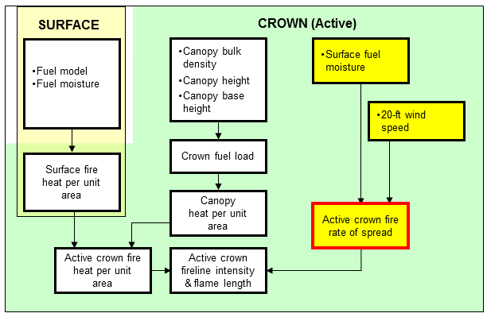
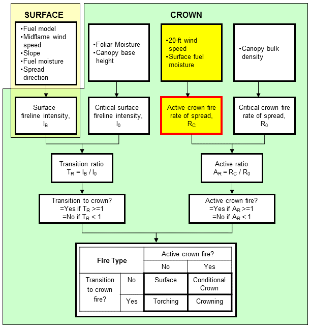

|
Active Crown Fire Rate of Spread |
Active crown fire rate of spread is the head fire (forward) spread rate of a crown fire estimated using Rothermel's (1991) crown fire spread model. It is the overall spread for a sustained run over several hours and implicitly includes the effects of spotting. It does not consider a description of the overstory. The active crown fire rate of spread is calculated from 20-foot wind speed and surface fuel moisture values.
Active crown fire outputs are the same for both the Rothermel (1991) and Scott and Reinhardt (2001) crown fire methods.
| I/O | Module | If | Notes |
| Input | None | ||
| Output | CROWN |
The active crown fire spread model is not physically-based, but is rather a simple correlation between the spread rates of several crown fires and calculations of the Rothermel (1972) surface fire model. The model does not include a description of either the surface or crown fuel. It is a function of only the 20-foot wind speed and surface fuel moisture values, using fuel model 10 (Anderson, 1982) to represent surface fuel characteristics.
Rothermel (1991) termed this value the "average rate of spread." He suggests that a "near maximum" rate of spread can be 1.7 times this average value. Calculation of active crown fire rate of spread in BehavePlus does not include crown fraction burned (Van Wagner 1993); that is part of the passive crown fire rate of spread calculation (Scott and Reinhardt 2001).
|  |
This calculated active crown fire rate of spread is compared to a critical crown fire rate of spread (Van Wagner 1977) to determine whether an active crown fire is possible.
|  |